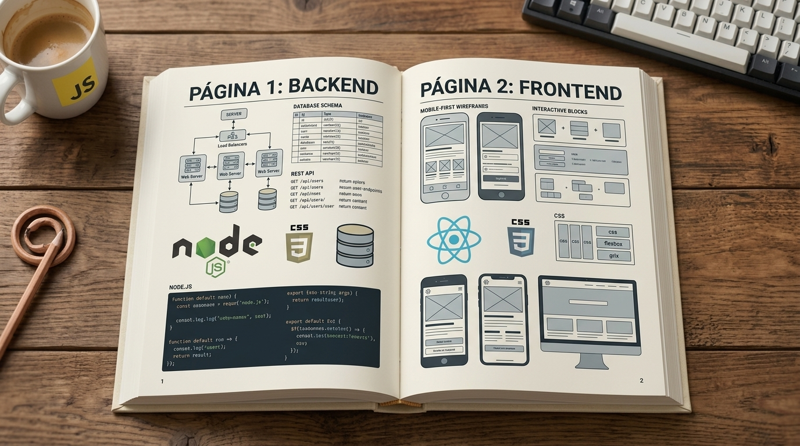
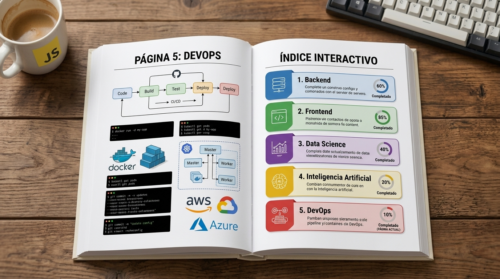
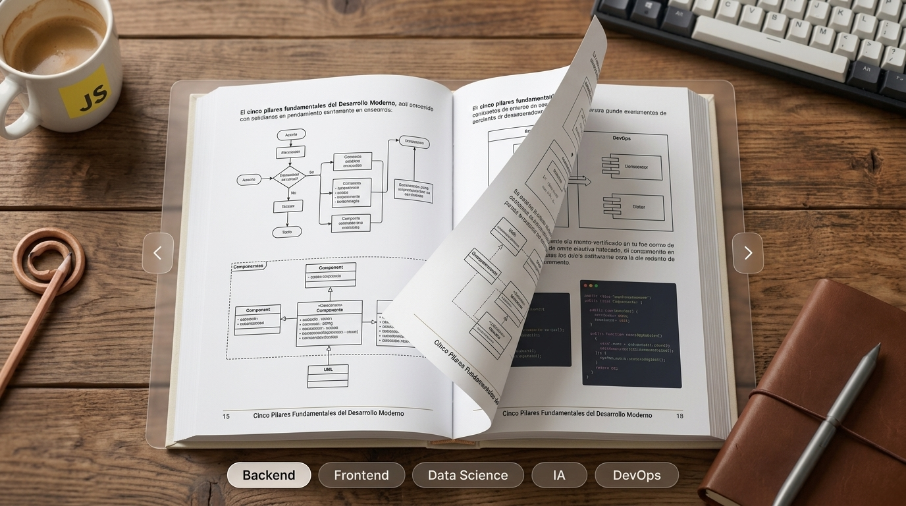

Portada
Explora los 5 Pilares Fundamentales del Desarrollo de Software.



Pilar 1: Backend
Arquitectura Backend & Servidores
Concepto
1 / 4
Cargando pregunta...
Haz clic o presiona Espacio para voltear
Explicación Didáctica
Respuesta
Cargando respuesta...
Pista didáctica
Pista...
Haz clic para volver a la pregunta
Tarjeta 1 de 4
Resumen Ejecutivo (Generado por RAG)
Cargando resumen...
Puntos Clave Extraídos
Términos Clave
►
Video Explicativo
4:30 minEstructura del Guion Pedagógico
Cargando pregunta del quiz...
Correcto
Explicación justificada...